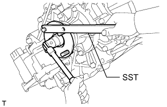
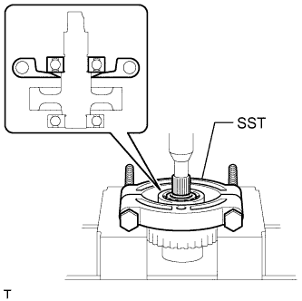

TRANSFER ASSEMBLY > DISASSEMBLY |
| 1. REMOVE HOSE |
Detach the clamp and remove the hose.
| 2. REMOVE TRANSFER RH BEARING RETAINER SUB-ASSEMBLY |
Remove the 5 bolts and bearing retainer.
| 3. REMOVE TRANSFER RH BEARING RETAINER OIL SEAL |
Using a screwdriver and hammer, remove the oil seal from the bearing retainer.
| 4. REMOVE TRANSFER CASE COVER SUB-ASSEMBLY |
Remove the 4 bolts and case cover.
| 5. REMOVE BREATHER OIL DEFLECTOR |
Remove the oil deflector.
| 6. REMOVE FRONT OUTPUT SHAFT COMPANION FLANGE SUB-ASSEMBLY |
Using a chisel and hammer, loosen the staked part of the lock nut.
Using SST to hold the companion flange, remove the lock nut.
Using SST, remove the companion flange.
| 7. REMOVE FRONT TRANSFER OUTPUT SHAFT COMPANION FLANGE OIL SEAL |
Using a screwdriver and hammer, tap out the oil seal from the companion flange.
| 8. REMOVE TRANSFER CASE FRONT OIL SEAL |
Using SST, tap out the oil seal.
| 9. REMOVE REAR OUTPUT SHAFT COMPANION FLANGE SUB-ASSEMBLY |
Using a chisel and hammer, loosen the staked part of the lock nut.
|  |
Using SST to hold the companion flange, remove the lock nut.
 |
Using SST, remove the companion flange.
| 10. REMOVE REAR TRANSFER OUTPUT SHAFT COMPANION FLANGE OIL SEAL |
Using a screwdriver and hammer, tap out the oil seal from the companion flange.
| 11. REMOVE TRANSFER CASE REAR OIL SEAL |
 |
Using SST, tap out the oil seal.
| 12. REMOVE TRANSFER EXTENSION HOUSING SUB-ASSEMBLY |
Remove the 5 bolts and extension housing.
| 13. REMOVE TRANSFER OUTPUT SHAFT WASHER |
Remove the 2 washers.
| 14. REMOVE COLLAR |
Remove the collar.
| 15. REMOVE REAR TRANSFER CASE |
Remove the 12 bolts and clamp.
Remove the rear transfer case.
| 16. REMOVE NO. 2 TRANSFER GEAR SHIFT FORK SUB-ASSEMBLY WITH TRANSFER HIGH AND LOW CLUTCH SLEEVE |
 |
Remove the bolt, No. 2 gear shift fork, and high and low clutch sleeve.
| 17. REMOVE CENTER DIFFERENTIAL LOCK FORK SUB-ASSEMBLY WITH FRONT DRIVE CLUTCH SLEEVE |
Using 2 screwdrivers and a hammer, tap off the snap ring.
 |
Remove the bolt, center differential lock fork and front drive clutch sleeve.
| 18. REMOVE REAR OUTPUT SHAFT SUB-ASSEMBLY, FRONT DRIVE CHAIN AND DRIVEN SPROCKET SUB-ASSEMBLY |
Mount the rear transfer case in a vise.
Using a snap ring expander, remove the snap ring.
Using a plastic-faced hammer, carefully tap the rear transfer case, and remove the rear output shaft together with the front drive chain and driven sprocket.
Remove the rear output shaft, front drive chain and driven sprocket.
| 19. REMOVE TRANSFER DRIVEN SPROCKET BEARING |
|  |
Using SST and a press, remove the driven sprocket bearing.
| 20. REMOVE TRANSFER INPUT GEAR RADIAL BALL BEARING |
Using SST and a press, remove the transfer input gear radial ball bearing.
| 21. REMOVE TRANSFER SHIFT ACTUATOR ASSEMBLY |
 |
Using 2 screwdrivers and a hammer, tap off the 2 snap rings.
Remove the 3 bolts and transfer shift actuator.
| 22. REMOVE FILLER PLUG |
Remove the filler plug and gasket.
| 23. REMOVE DRAIN PLUG |
Remove the drain plug and gasket.
| 24. REMOVE TRANSFER OIL SEPARATOR SUB-ASSEMBLY |
Remove the 3 bolts and oil separator.
| 25. REMOVE TRANSFER CASE MAGNET |
| 26. REMOVE TRANSFER OIL PUMP BODY SUB-ASSEMBLY |
Remove the 3 bolts and oil pump body.
| 27. REMOVE TRANSFER OIL PUMP BODY O-RING |
Using a screwdriver, remove the oil pump body O-ring.
| 28. REMOVE TRANSFER OIL PUMP GEAR |
Remove the transfer oil pump gear.
| 29. REMOVE LOW PLANETARY GEAR ASSEMBLY WITH TRANSFER INPUT SHAFT SUB-ASSEMBLY |
 |
Using a snap ring expander, remove the snap ring.
Remove the low planetary gear together with the input shaft.
| 30. REMOVE TRANSFER OUTPUT SHAFT SPACER |
Remove the transfer output shaft spacer.
| 31. REMOVE TRANSFER OUTPUT SHAFT FRONT NEEDLE ROLLER BEARING |
Remove the needle roller bearing.
| 32. REMOVE TRANSFER INPUT GEAR STOPPER SHAFT SNAP RING |
Using a snap ring expander, remove the snap ring.
| 33. REMOVE TRANSFER INPUT GEAR STOPPER |
Remove the input gear stopper.
| 34. REMOVE TRANSFER INPUT GEAR STOPPER BALL |
Remove the ball.
| 35. REMOVE MANUAL TRANSFER PLANETARY CARRIER WASHER |
Remove the washer.
| 36. REMOVE TRANSFER INPUT SHAFT |
Remove the transfer input shaft.
| 37. REMOVE NO. 1 TRANSFER THRUST BEARING RACE |
Remove the thrust bearing race.
| 38. REMOVE TRANSFER LOW PLANETARY GEAR THRUST BEARING |
Remove the bearing.
| 39. REMOVE NO. 1 TRANSFER INPUT SHAFT SEAL RING |
Remove the 2 seal rings.
| 40. REMOVE TRANSFER INPUT SHAFT BEARING |
Using a snap ring expander, remove the snap ring.
Using SST and a press, remove the input shaft bearing.
| 41. REMOVE TRANSFER LOW PLANETARY GEAR SPLINE PIECE |
 |
Using a screwdriver, remove the snap ring.
Remove the low planetary gear spline piece.
| 42. REMOVE TRANSFER LOW PLANETARY GEAR BEARING |
Using SST, remove the low planetary gear bearing.
| 43. REMOVE NO. 2 TRANSFER OUTPUT SHAFT SPACER |
Using a snap ring expander, remove the snap ring.
Remove the spacer.
| 44. REMOVE TRANSFER OUTPUT SHAFT SPACER BALL |
Remove the ball.
| 45. REMOVE CENTER DIFFERENTIAL CASE |
Remove the center differential case.
| 46. REMOVE TRANSFER CLUTCH HUB |
Remove the transfer clutch hub.
| 47. REMOVE TRANSFER OUTPUT SHAFT FRONT NEEDLE ROLLER BEARING |
Remove the needle roller bearing.
| 48. REMOVE TRANSFER OUTPUT SHAFT PLATE WASHER |
Remove the washer.
| 49. REMOVE REAR TRANSFER OUTPUT SHAFT RADIAL BALL BEARING |
Using SST and a press, remove the bearing.
| 50. REMOVE NO. 1 TRANSFER OUTPUT SHAFT SPACER |
Remove the output shaft spacer.
| 51. REMOVE TRANSFER DRIVE SPROCKET SUB-ASSEMBLY |
Remove the transfer drive sprocket.
| 52. REMOVE TRANSFER DRIVE SPROCKET BEARING |
Remove the bearing.
| 53. REMOVE TRANSFER OUTPUT SHAFT PLATE WASHER |
Remove the washer.
| 54. REMOVE TRANSFER CASE PLUG |
Remove the transfer case plug.
| 55. REMOVE COMPRESSION SPRING |
Remove the spring.
| 56. REMOVE PIN |
Remove the pin.
| 57. REMOVE TRANSFER LOW PLANETARY RING GEAR |
 |
Using a screwdriver, remove the snap ring.
Remove the low planetary ring gear from the front transfer case.